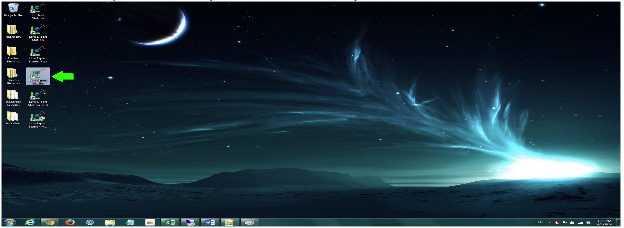
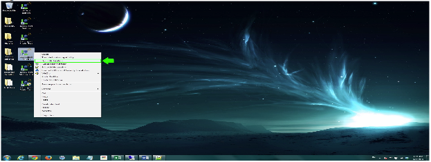
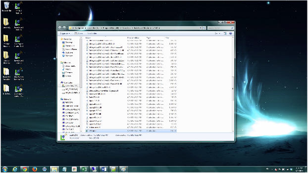
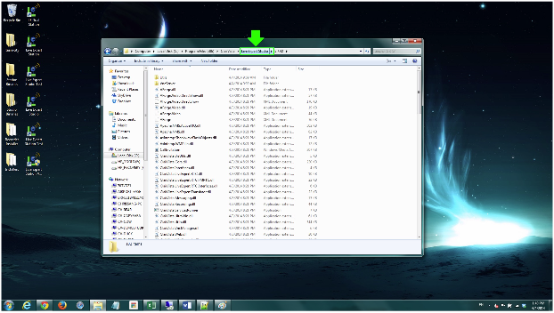
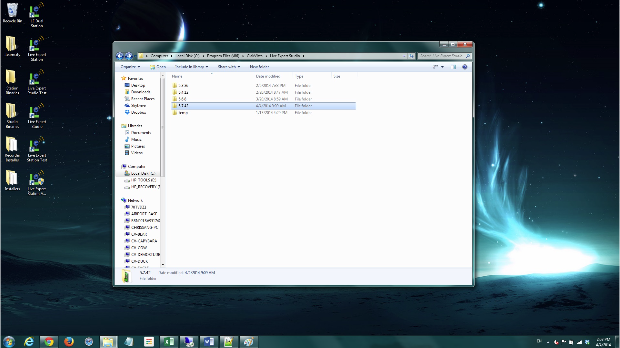
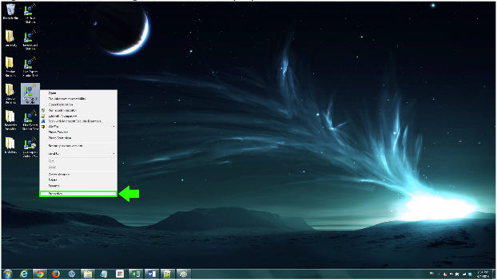
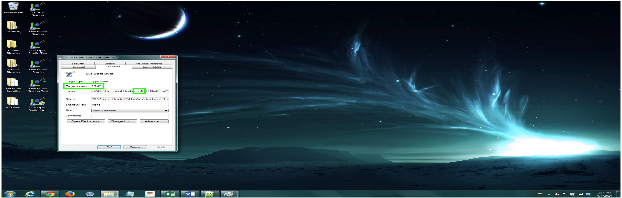
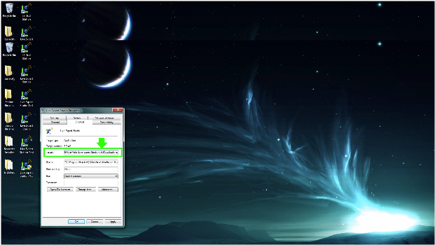
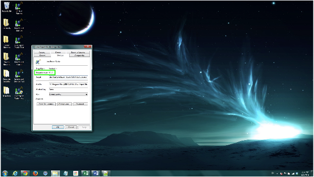
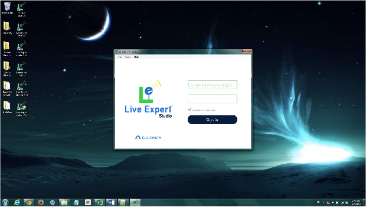

How-to instructions for rolling back to a previous LE Studio version:¶
If the need arises where it is necessary to roll back to a previous version of LE Studio, there are easy steps to get there.
First, knowing how to lookup previous versions of LE Studio is needed. Without the correct LE Studio version number, the roll back would be invalid. To find this number follow the below steps...
Step 1:
Select the Live Expert Studio on your machine’s desktop.
Step 2:
Right click LE Studio
Step 3:
Click on Open File Location from the menu; the below window will launch
Step 4:
In the file path bar, click on Live Expert Studio
Now you will be at the below window.
Note: This folder location is home to the latest/current version (in this case 5.7.42) and the last three previous LE Studio versions (5.6.8, 5.4.12, and 5.3.36) that have been deployed to your environment.
Step 5:
Now that the previous version numbers have been noted, we can roll back the LE Studio version number properly. In this case, as seen above, our current version is 5.7.42 and we want to go back to the 5.6.8 LE Studio.
Close the explorer window from Step 4.
Step 6:
Select LE Studio; copy and paste it on the desktop. Now, right click LE Studio again and select Properties.
Step 7:
The properties window will now launch.
Note: In the shortcut section, the target location is the current LE Studio version (5.7.42). We want to roll this back to 5.6.8.
See the next step to accomplish this.
Step 8:
Put your cursor in the traget text box, delete the current target (5.7.42 in this case), and add the version you wish to roll back to. In this case, 5.6.8 is what we are rolling back to.
Step 9:
- Click Apply
- The below access denied window will launch if you need to provide administrator permission to perform the change.
- Click Continue
- Click OK in the property window.
Step 10:
Verify that the LE Studio version has been changed to 5.6.8. To do so, simply right click LE Studio once more and select Properties.
Note: The Target Location now reads 5.6.8.
LE Studio has now been successfully rolled back to the previous version and is ready to use. Thanks for using Live Expert!
